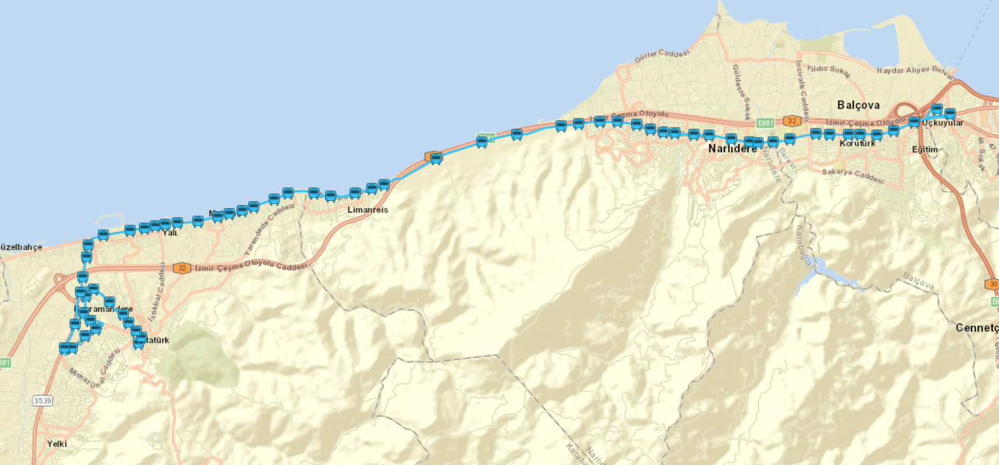
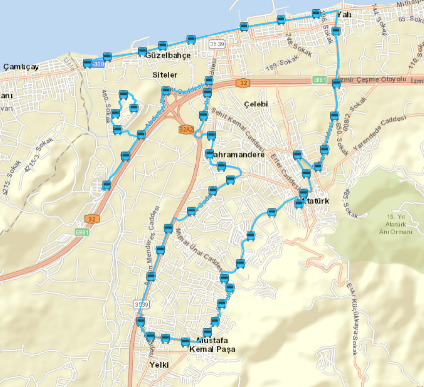
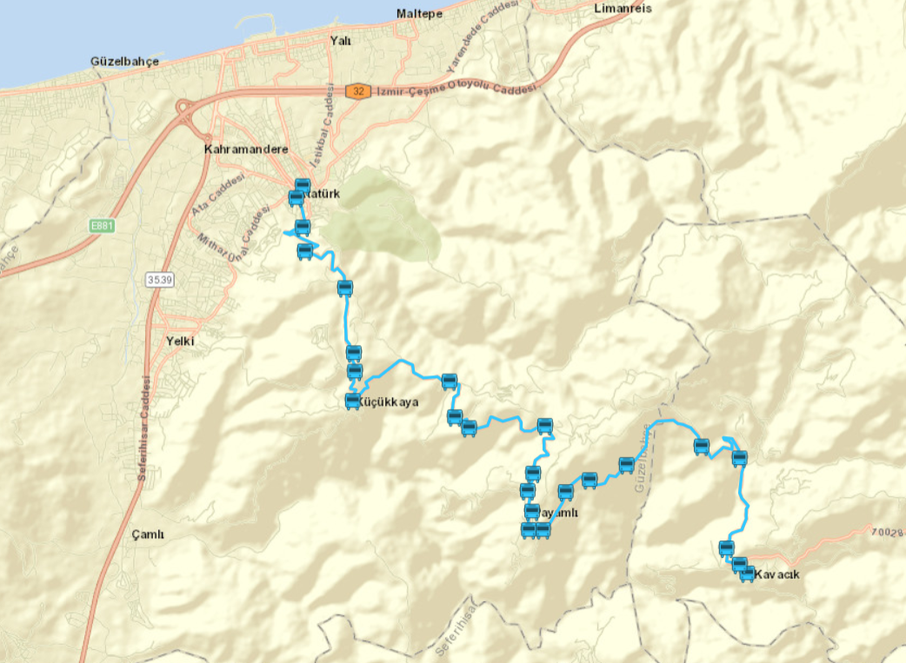
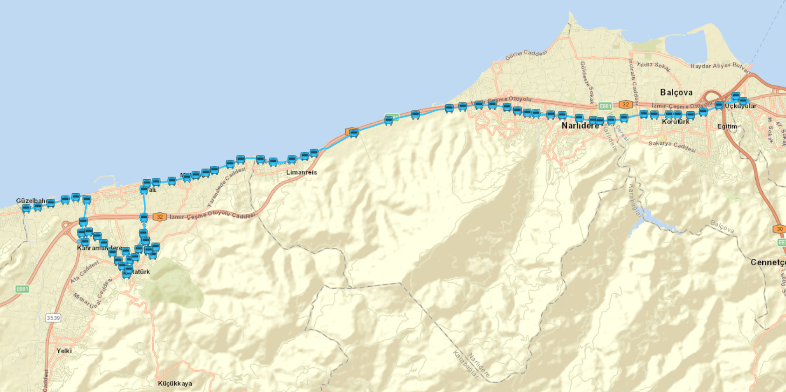
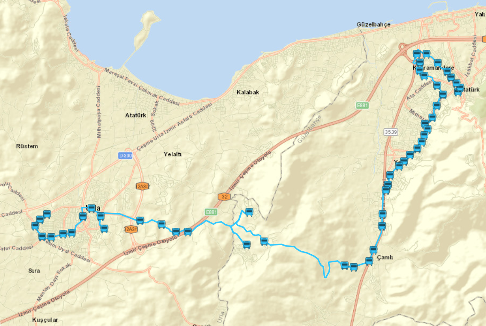
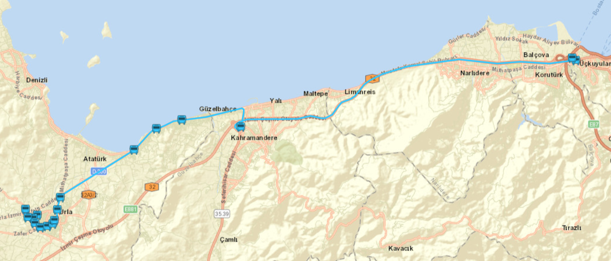

ESHOT Otobüs Verileri
Aylık Günlük Ortalama Biniş İstatistikleri (Ocak - Aralık)
Günlük Ortalama Biniş Sayısı (Aylara Göre)
Otobüs Başına Günlük Ortalama Biniş Sayısı
Özel Hat İncelemeleri
Hat No: 8 - GÜZELBAHÇE - FAHRETTİN ALTAY AKTARMA MERKEZİ
GÜZERGAH : SEFERİHİSAR KAVŞAĞI-MİTHAT PAŞA CAD. - 9 EYLÜL HASTANESİ (Görüntülemek için tıklayınız)ESHOT 8 Numaralı Hat Bilgisi: İlk kalkış 06:00, son kalkış 00:30. Otobüsler ortalama 21 - 22 dakika aralık ile kalkıyor ve gün içinde ortalama gidiş-dönüş 100 sefer yapıyor.
Harita ve Saatler (ESHOT)
8 NO'lu Hattın Geçtiği Duraklar (64 Durak)
Hat No: 9 - ÖZZÜMRÜT EVLERİ – SİTELER
GÜZERGAH : MİTHATPAŞA CAD. - ISTIKBAL CAD. (Görüntülemek için tıklayınız)ESHOT 9 Numaralı Hat Bilgisi: İlk kalkış 06:35, son kalkış 20:20. Otobüsler ortalama 2 saat aralık ile kalkıyor ve gün içinde ortalama gidiş-dönüş 16 sefer yapıyor.
Harita ve Saatler (ESHOT)
9 NO'lu Hattın Geçtiği Duraklar (50 Durak)
Hat No: 28 - KAVACIK – GÜZELBAHÇE
GÜZERGAH : PAYAMLI - KÜÇÜKKAYA KÖYÜ (Görüntülemek için tıklayınız)ESHOT 28 Numaralı Hat Bilgisi: İlk kalkış 06:50, son kalkış 18:20. Otobüsler ortalama 4 saat aralık ile kalkıyor ve gün içinde ortalama gidiş-dönüş 8 - 9 sefer yapıyor.
Harita ve Saatler (ESHOT)
28 NO'lu Hattın Geçtiği Duraklar (25 Durak)
Hat No: 82 - SİTELER - FAHRETTİN ALTAY AKTARMA MERKEZİ
GÜZERGAH : MİTHATPAŞA CAD. - NARLIDERE - 9 EYLÜL HASTANESİ (Görüntülemek için tıklayınız)ESHOT 82 Numaralı Hat Bilgisi: İlk kalkış 06:00, son kalkış 00:25. Otobüsler ortalama 30 dakika aralık ile kalkıyor ve gün içinde ortalama gidiş-dönüş 60 sefer yapıyor.
Harita ve Saatler (ESHOT)
82 NO'lu Hattın Geçtiği Duraklar (71 Durak)
Hat No: 762 - GÜZELBAHÇE - URLA
GÜZERGAH : YELKİ - DADAŞKENT (Görüntülemek için tıklayınız)ESHOT 762 Numaralı Hat Bilgisi: İlk kalkış 06:40, son kalkış 16:30. Seferler ortalama 2 saat aralıklarla düzenlenmekte olup, gün içinde ortalama gidiş-dönüş 6 sefer yapıyor.
Harita ve Saatler (ESHOT)
762 NO'lu Hattın Geçtiği Duraklar (52 Durak)
Hat No: 684 - URLA - FAHRETTİN ALTAY AKTARMA MERKEZİ EKSPRES
GÜZERGAH : URLA DEVLET HASTANESİ - ÇEVREYOLU (Görüntülemek için tıklayınız)ESHOT 684 Numaralı Hat Bilgisi: İlk kalkış 06:00, son kalkış 21:20. Otobüsler ortalama 25 dakika aralık ile kalkıyor ve gün içinde ortalama gidiş-dönüş 70 sefer yapıyor.
Harita ve Saatler (ESHOT)